1 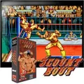
3 Count Bout que D haga la cuenta sobre el rival caído y que C salte. En los forcejeos hay que machacar A y B.
Botones A · Dar un puñetazo · pulsar muy rápido: ataque especial B · Dar una patada C · Saltar · con el rival en el suelo: dejarse caer sobre él D · Hacer la cuenta (inmovilizar al rival caído) · en parejas: dar el relevo + A + B · Retroceder rápido Empezar Meter una moneda + Salir del juego
Ver ficha y guía → ✅ Bien ⚠️ Problema ⏭️ Luego
2 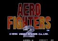
Aero Fighters 2 / Sonic Wings 2 que B lance la bomba. C y D no se usan.
Botones A · Disparar B · Lanzar una bomba (hay pocas) Empezar Meter una moneda + Salir del juego
Ver ficha y guía → ✅ Bien ⚠️ Problema ⏭️ Luego
3 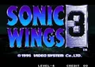
Aero Fighters 3 que B lance la bomba. C y D no se usan.
Botones A · Disparar B · Lanzar una bomba Empezar Meter una moneda + Salir del juego
Ver ficha y guía → ✅ Bien ⚠️ Problema ⏭️ Luego
4 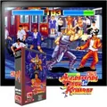
Aggressors of Dark Kombat que C salte (aquí no se salta con el joystick: arriba y abajo mueven hacia el fondo y hacia delante). D no se usa.
Botones A · Dar un puñetazo B · Dar una patada C · Saltar Empezar Meter una moneda + Salir del juego
Ver ficha y guía → ✅ Bien ⚠️ Problema ⏭️ Luego
5 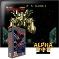
Alpha Mission II - Last Guardian al empezar se elige el modo A o B; en el A, B ataca con la armadura, y en el B, lanza misiles. Comprobar que C abre el menú de armaduras.
Botones A · Disparar el láser y los misiles · ponerse una armadura B · Atacar con la armadura (en el modo B: misiles) C · Abrir el menú de armaduras Empezar Meter una moneda + Salir del juego
Ver ficha y guía → ✅ Bien ⚠️ Problema ⏭️ Luego
que B cambie de arma y que, al mantener A, salga el disparo cargado. C y D no se usan.
Botones A · Disparar · mantener: disparo cargado (baja la potencia del arma) B · Cambiar de arma (cuatro tipos) Empezar Meter una moneda + Salir del juego
Ver ficha y guía → ✅ Bien ⚠️ Problema ⏭️ Luego
7 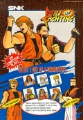
Art of Fighting que D provoque y que C, pegado al rival, lo lance.
Botones A · Dar un puñetazo (mantener: más fuerte) B · Dar una patada (mantener: más fuerte) C · Golpe fuerte · cerca del rival: agarrarlo y lanzarlo D · Provocar al rival (le quita espíritu) Empezar Meter una moneda + Salir del juego
Ver ficha y guía → ✅ Bien ⚠️ Problema ⏭️ Luego
8 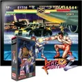
Art of Fighting 2 que C repita el último golpe con más fuerza y que D provoque.
Botones A · Dar un puñetazo B · Dar una patada C · Golpe fuerte (del último tipo pulsado, puñetazo o patada) · cerca del rival: agarrarlo y lanzarlo D · Provocar al rival (le quita espíritu) Empezar Meter una moneda + Salir del juego
Ver ficha y guía → ✅ Bien ⚠️ Problema ⏭️ Luego
9 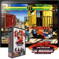
Art of Fighting 3 - The Path of the Warrior que C dé el golpe fuerte (y, pegado al rival y con dirección, lo lance) y que D provoque.
Botones A · Dar un puñetazo B · Dar una patada C · Golpe fuerte · cerca del rival + dirección: lanzarlo D · Provocar al rival Empezar Meter una moneda + Salir del juego
Ver ficha y guía → ✅ Bien ⚠️ Problema ⏭️ Luego
10 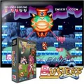
Bang Bang Busters que A infle a los enemigos y los lance, y que B salte. C y D no se usan.
Botones A · Disparar (infla a los enemigos) · con un enemigo inflado: lanzarlo (mantener para apuntar) B · Saltar · pulsar varias veces: flotar Empezar Meter una moneda + Salir del juego
Ver ficha y guía → ✅ Bien ⚠️ Problema ⏭️ Luego
qué hacen A y B (y si C o D sirven para algo). En Battle Flip Shot , la primera parte, A es el tiro especial y B + joystick, deslizarse.
Botones A · Golpear la pelota · tiro especial (⚠️ por confirmar) B · Deslizarse (⚠️ por confirmar) Empezar Meter una moneda + Salir del juego
Ver ficha y guía → ✅ Bien ⚠️ Problema ⏭️ Luego
12 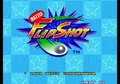
Battle Flip Shot que A haga el tiro especial y que B + joystick deslice al personaje. Hay una provocación: comprobar si es C o D.
Botones A · Tiro especial (Power Shot ) B · Con el joystick: deslizarse Empezar Meter una moneda + Salir del juego
Ver ficha y guía → ✅ Bien ⚠️ Problema ⏭️ Luego
13 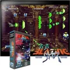
Blazing Star que, al mantener A y soltar, salga el disparo cargado, y que B lo disperse. C y D no se usan.
Botones A · Disparar · pulsar rápido: otro tipo de disparo · mantener: cargar B · Durante la carga: dispersar el disparo cargado en balas pequeñas Empezar Meter una moneda + Salir del juego
Ver ficha y guía → ✅ Bien ⚠️ Problema ⏭️ Luego
14 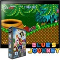
Blue's Journey que C encoja a Blue (sirve para entrar en zonas ocultas). D no se usa.
Botones A · Atacar (aturde a los enemigos; luego se pueden coger y lanzar) B · Saltar C · Encogerse o volver al tamaño normal Empezar Meter una moneda + Salir del juego
Ver ficha y guía → ✅ Bien ⚠️ Problema ⏭️ Luego
que los cuatro botones sean puñetazo y patada, flojos y fuertes (⚠️ las guías no lo dicen claro).
Botones A · Dar un puñetazo flojo B · Dar una patada floja C · Dar un puñetazo fuerte D · Dar una patada fuerte Empezar Meter una moneda + Salir del juego
Ver ficha y guía → ✅ Bien ⚠️ Problema ⏭️ Luego
16 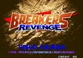
Breakers Revenge que los cuatro botones sean puñetazo y patada, flojos y fuertes (⚠️ las guías no lo dicen claro).
Botones A · Dar un puñetazo flojo B · Dar una patada floja C · Dar un puñetazo fuerte D · Dar una patada fuerte Empezar Meter una moneda + Salir del juego
Ver ficha y guía → ✅ Bien ⚠️ Problema ⏭️ Luego
17 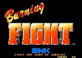
Burning Fight que B salte y que C dé la patada. D no se usa.
Botones A · Dar un puñetazo B · Saltar C · Dar una patada Empezar Meter una moneda + Salir del juego
Ver ficha y guía → ✅ Bien ⚠️ Problema ⏭️ Luego
18 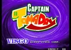
Captain Tomaday que A y B lancen cada puño y que, al mantener uno, el otro crezca hasta hacerse una pesa de 16 toneladas. C quizá cambia la formación.
Botones A · Lanzar el puño izquierdo (mantener: seguido) B · Lanzar el puño derecho (mantener: seguido) C · Cambiar la formación (⚠️ por confirmar) Empezar Meter una moneda + Salir del juego
Ver ficha y guía → ✅ Bien ⚠️ Problema ⏭️ Luego
19 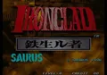
Choutetsu Brikin'ger - Iron Clad (prototype) qué hace cada botón: las guías consultadas no lo dicen.
Botones A · Disparar (⚠️ por confirmar) B · ⚠️ Por confirmar C · ⚠️ Por confirmar Empezar Meter una moneda + Salir del juego
Ver ficha y guía → ✅ Bien ⚠️ Problema ⏭️ Luego
qué botón gira la columna y si abajo la deja caer más rápido.
Botones A · Girar los colores de la columna (⚠️ por confirmar) Empezar Meter una moneda + Salir del juego
Ver ficha y guía → ✅ Bien ⚠️ Problema ⏭️ Luego
21 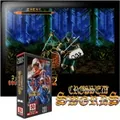
Crossed Swords que A ataque y B lance magia. El joystick mueve, cubre arriba o al medio y esquiva a los lados.
Botones A · Atacar con la espada B · Lanzar magia Empezar Meter una moneda + Salir del juego
Ver ficha y guía → ✅ Bien ⚠️ Problema ⏭️ Luego
22 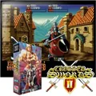
Crossed Swords 2 (bootleg of CD version) qué hace cada botón. Según Wikipedia, esta segunda parte añade un botón para saltar y esquivar.
Botones A · Atacar (⚠️ por confirmar) B · Lanzar magia (⚠️ por confirmar) C · Saltar o esquivar (⚠️ por confirmar) Empezar Meter una moneda + Salir del juego
Ver ficha y guía → ✅ Bien ⚠️ Problema ⏭️ Luego
23 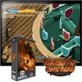
Crouching Pony Hidden Dragon qué hace cada botón. Es una demo casera de 2013; no hay guías.
Botones A · ⚠️ Por confirmar B · ⚠️ Por confirmar Empezar Meter una moneda + Salir del juego
Ver ficha y guía → ✅ Bien ⚠️ Problema ⏭️ Luego
que C cambie de arma. D no se usa.
Botones A · Disparar B · Saltar C · Cambiar de arma Empezar Meter una moneda + Salir del juego
Ver ficha y guía → ✅ Bien ⚠️ Problema ⏭️ Luego
25 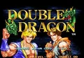
Double Dragon que los cuatro botones vayan de flojo a fuerte (aquí no hay botones de puñetazo y patada: el golpe depende de la posición). Los supermovimientos se hacen con dos botones a la vez.
Botones A · Ataque flojo B · Ataque medio C · Ataque fuerte D · Ataque más fuerte Empezar Meter una moneda + Salir del juego
Ver ficha y guía → ✅ Bien ⚠️ Problema ⏭️ Luego
que B salte (y con abajo, deslice) y que C haga el ataque especial. D no se usa.
Botones A · Atacar B · Saltar · abajo + B: deslizarse C · Ataque especial Empezar Meter una moneda + Salir del juego
Ver ficha y guía → ✅ Bien ⚠️ Problema ⏭️ Luego
27 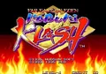
Far East of Eden - Kabuki Klash / Tengai Makyou - Shin Den qué hace cada botón: las guías consultadas no lo dicen. Se juega como Samurai Shodown (luchadores con armas).
Botones A · Ataque flojo (⚠️ por confirmar) B · Ataque medio (⚠️ por confirmar) C · Ataque fuerte (⚠️ por confirmar) D · ⚠️ Por confirmar Empezar Meter una moneda + Salir del juego
Ver ficha y guía → ✅ Bien ⚠️ Problema ⏭️ Luego
28 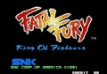
Fatal Fury - King of Fighters que C sea el agarre. D no se usa. En el modo de un jugador, cambias de plano solo cuando lo hace el rival.
Botones A · Dar un puñetazo · en el bonus: machacar para ganar el pulso B · Dar una patada C · Agarrar y lanzar (⚠️ por confirmar) Empezar Meter una moneda + Salir del juego
Ver ficha y guía → ✅ Bien ⚠️ Problema ⏭️ Luego
29 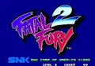
Fatal Fury 2 que A + B cambie de plano (delante o al fondo). Lejos del rival, C provoca.
Botones A · Dar un puñetazo flojo B · Dar una patada floja C · Dar un puñetazo fuerte D · Dar una patada fuerte + A + B · Cambiar de plano Empezar Meter una moneda + Salir del juego
Ver ficha y guía → ✅ Bien ⚠️ Problema ⏭️ Luego
30 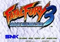
Fatal Fury 3 - Road to the Final Victory que A + B y B + C cambien de plano (aquí hay tres).
Botones A · Dar un puñetazo flojo B · Dar una patada floja C · Dar un puñetazo fuerte D · Dar una patada fuerte + A + B · Pasar al plano de delante + B + C · Pasar al plano del fondo Empezar Meter una moneda + Salir del juego
Ver ficha y guía → ✅ Bien ⚠️ Problema ⏭️ Luego
31 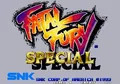
Fatal Fury Special que A + B cambie de plano. Lejos del rival, C provoca.
Botones A · Dar un puñetazo flojo B · Dar una patada floja C · Dar un puñetazo fuerte D · Dar una patada fuerte + A + B · Cambiar de plano Empezar Meter una moneda + Salir del juego
Ver ficha y guía → ✅ Bien ⚠️ Problema ⏭️ Luego
32 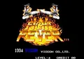
Fight Fever que los cuatro botones sean puñetazo y patada, flojos y fuertes. En el primer bonus hay que machacar A.
Botones A · Dar un puñetazo flojo B · Dar una patada floja C · Dar un puñetazo fuerte D · Dar una patada fuerte Empezar Meter una moneda + Salir del juego
Ver ficha y guía → ✅ Bien ⚠️ Problema ⏭️ Luego
33 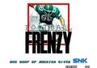
Football Frenzy (NGM-034 ~ NGH-034) que A corra y chute, y que B pase y cambie de jugador. C y D también pasan (a otros receptores).
Botones A · Correr · chutar · placar B · Pasar · cambiar de jugador C · Pasar D · Pasar Empezar Meter una moneda + Salir del juego
Ver ficha y guía → ✅ Bien ⚠️ Problema ⏭️ Luego
34 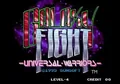
Galaxy Fight - Universal Warriors que A, B y C sean ataques de fuerza creciente y que D provoque. Hay movimientos con varios botones a la vez.
Botones A · Ataque flojo B · Ataque medio C · Ataque fuerte D · Provocar Empezar Meter una moneda + Salir del juego
Ver ficha y guía → ✅ Bien ⚠️ Problema ⏭️ Luego
qué hace C (las guías no lo dicen). D no se usa.
Botones A · Atacar con la espada B · Saltar C · ⚠️ Por confirmar (quizá una técnica especial) Empezar Meter una moneda + Salir del juego
Ver ficha y guía → ✅ Bien ⚠️ Problema ⏭️ Luego
36 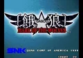
Garou - Mark of the Wolves (NGM-2530) que C, pegado al rival, lo lance y que A + B dé el golpe por arriba. Al elegir luchador se coloca la zona T.O.P. en la barra de vida.
Botones A · Dar un puñetazo flojo B · Dar una patada floja C · Dar un puñetazo fuerte D · Dar una patada fuerte + A + B · Golpe por arriba (contra ataques bajos) Empezar Meter una moneda + Salir del juego
Ver ficha y guía → ✅ Bien ⚠️ Problema ⏭️ Luego
37 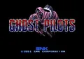
Ghost Pilots (NGM-020 ~ NGH-020) que B lance la bomba elegida antes de la fase. C y D no se usan.
Botones A · Disparar B · Lanzar una bomba Empezar Meter una moneda + Salir del juego
Ver ficha y guía → ✅ Bien ⚠️ Problema ⏭️ Luego
que A y B cambien el color de la bola (roja o azul).
Botones A · Poner la bola roja B · Poner la bola azul Empezar Meter una moneda + Salir del juego
Ver ficha y guía → ✅ Bien ⚠️ Problema ⏭️ Luego
39 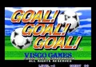
Goal! Goal! Goal! qué hacen A, B y C (las guías no lo dicen).
Botones A · Chutar · sin balón: entrar (⚠️ por confirmar) B · Pasar (⚠️ por confirmar) Empezar Meter una moneda + Salir del juego
Ver ficha y guía → ✅ Bien ⚠️ Problema ⏭️ Luego
que A y B giren el tablero. C y D no se usan.
Botones A · Girar el tablero a la izquierda B · Girar el tablero a la derecha Empezar Meter una moneda + Salir del juego
Ver ficha y guía → ✅ Bien ⚠️ Problema ⏭️ Luego
41 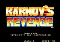
Karnov's Revenge / Fighter's History Dynamite el orden de los botones: según StrategyWiki, A y B son puñetazos y C y D patadas (no como en otros juegos de SNK).
Botones A · Dar un puñetazo rápido B · Dar un puñetazo fuerte C · Dar una patada rápida D · Dar una patada fuerte Empezar Meter una moneda + Salir del juego
Ver ficha y guía → ✅ Bien ⚠️ Problema ⏭️ Luego
42 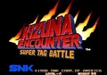
Kizuna Encounter - Super Tag Battle qué botón cambia de compañero (hay que estar en la zona de relevo de tu equipo) y si D es la patada fuerte.
Botones A · Dar un puñetazo flojo B · Dar una patada floja C · Dar un puñetazo fuerte D · Dar una patada fuerte (⚠️ por confirmar) Empezar Meter una moneda + Salir del juego
Ver ficha y guía → ✅ Bien ⚠️ Problema ⏭️ Luego
qué hacen B y C (las guías consultadas no lo dicen).
Botones A · Disparar B · ⚠️ Por confirmar (manejar el módulo de la nave) C · ⚠️ Por confirmar Empezar Meter una moneda + Salir del juego
Ver ficha y guía → ✅ Bien ⚠️ Problema ⏭️ Luego
44 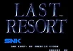
Last Resort que B fije o suelte el módulo. C y D no se usan.
Botones A · Disparar (también dispara el módulo) B · Fijar el módulo o soltarlo para que gire alrededor de la nave Empezar Meter una moneda + Salir del juego
Ver ficha y guía → ✅ Bien ⚠️ Problema ⏭️ Luego
45 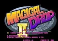
Magical Drop II que A coja las gotas y B las lance. C y D no se usan.
Botones A · Coger las gotas de la columna B · Lanzar las gotas a la columna Empezar Meter una moneda + Salir del juego
Ver ficha y guía → ✅ Bien ⚠️ Problema ⏭️ Luego
46 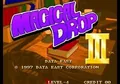
Magical Drop III que A coja, B lance y C haga bajar una fila nueva. D no se usa.
Botones A · Coger las gotas de la columna B · Lanzar las gotas a la columna C · Hacer bajar una fila nueva Empezar Meter una moneda + Salir del juego
Ver ficha y guía → ✅ Bien ⚠️ Problema ⏭️ Luego
47 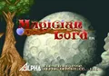
Magician Lord que A dispare (en cuatro direcciones con el joystick) y B salte. C y D no se usan.
Botones A · Disparar magia B · Saltar Empezar Meter una moneda + Salir del juego
Ver ficha y guía → ✅ Bien ⚠️ Problema ⏭️ Luego
48 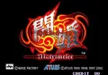
Matrimelee qué hace cada botón (las guías no lo dicen). Todos los luchadores pueden hacer doble salto y correr.
Botones A · Puñetazo flojo (⚠️ por confirmar) B · Patada floja (⚠️ por confirmar) C · Puñetazo fuerte (⚠️ por confirmar) D · Patada fuerte (⚠️ por confirmar) Empezar Meter una moneda + Salir del juego
Ver ficha y guía → ✅ Bien ⚠️ Problema ⏭️ Luego
49 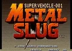
Metal Slug - Super Vehicle-001 que C lance granadas y que, dentro del tanque, dispare el cañón. D no se usa.
Botones A · Disparar B · Saltar C · Lanzar una granada (en un vehículo: disparar el cañón) Empezar Meter una moneda + Salir del juego
Ver ficha y guía → ✅ Bien ⚠️ Problema ⏭️ Luego
50 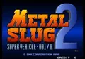
Metal Slug 2 - Super Vehicle-001/II que C lance granadas (y el cañón en los vehículos). D no se usa.
Botones A · Disparar B · Saltar C · Lanzar una granada (en un vehículo: disparar el cañón) Empezar Meter una moneda + Salir del juego
Ver ficha y guía → ✅ Bien ⚠️ Problema ⏭️ Luego
51
Metal Slug 3 que C lance granadas (y el arma del vehículo). D no se usa.
Botones A · Disparar B · Saltar C · Lanzar una granada (en un vehículo: disparar el cañón) Empezar Meter una moneda + Salir del juego
Ver ficha y guía → ✅ Bien ⚠️ Problema ⏭️ Luego
52
Metal Slug 4 (NGM-2630) que C lance granadas y D lance el vehículo contra los enemigos.
Botones A · Disparar B · Saltar C · Lanzar una granada (en un vehículo: disparar el cañón) D · Lanzar el vehículo contra los enemigos y saltar fuera Empezar Meter una moneda + Salir del juego
Ver ficha y guía → ✅ Bien ⚠️ Problema ⏭️ Luego
53
Metal Slug 5 que C lance granadas, D lance el vehículo y que, corriendo, abajo + B haga el deslizamiento.
Botones A · Disparar B · Saltar C · Lanzar una granada (en un vehículo: disparar el cañón) D · Lanzar el vehículo contra los enemigos y saltar fuera Empezar Meter una moneda + Salir del juego
Ver ficha y guía → ✅ Bien ⚠️ Problema ⏭️ Luego
54
Metal Slug 6 (Metal Slug 3 bootleg) que C lance granadas. Hay que ver qué cambia esta versión pirata frente a Metal Slug 3 .
Botones A · Disparar B · Saltar C · Lanzar una granada (en un vehículo: disparar el cañón) Empezar Meter una moneda + Salir del juego
Ver ficha y guía → ✅ Bien ⚠️ Problema ⏭️ Luego
55
Metal Slug X - Super Vehicle-001 (NGM-2500 ~ NGH-2500) que C lance granadas (y el cañón en los vehículos). D no se usa.
Botones A · Disparar B · Saltar C · Lanzar una granada (en un vehículo: disparar el cañón) Empezar Meter una moneda + Salir del juego
Ver ficha y guía → ✅ Bien ⚠️ Problema ⏭️ Luego
56
Money Puzzle Exchanger que A coja las monedas y B las lance. C y D no se usan.
Botones Empezar A · Coger las monedas de la columna B · Lanzar las monedas Meter una moneda + Salir del juego
Ver ficha y guía → ✅ Bien ⚠️ Problema ⏭️ Luego
57
Mutation Nation que A ataque y B salte. Falta saber cómo se lanza el superataque de las esferas.
Botones A · Atacar B · Saltar Empezar Meter una moneda + Salir del juego
Ver ficha y guía → ✅ Bien ⚠️ Problema ⏭️ Luego
58
NAM-1975 que B lance granadas y C haga correr al soldado para esquivar. D no se usa.
Botones A · Disparar (mantener: mover la mira sin mover al soldado) B · Lanzar una granada a la mira C · Correr o esquivar Empezar Meter una moneda + Salir del juego
Ver ficha y guía → ✅ Bien ⚠️ Problema ⏭️ Luego
59
Neo Bomberman qué hace B (las guías consultadas no lo dicen).
Botones A · Poner una bomba B · ⚠️ Por confirmar (quizá patear o lanzar bombas, con el objeto adecuado) Empezar Meter una moneda + Salir del juego
Ver ficha y guía → ✅ Bien ⚠️ Problema ⏭️ Luego
60
Neo Drift Out - New Technology qué botón acelera y cuál frena (las guías consultadas no lo dicen).
Botones A · Acelerar (⚠️ por confirmar) B · Frenar (⚠️ por confirmar) Empezar Meter una moneda + Salir del juego
Ver ficha y guía → ✅ Bien ⚠️ Problema ⏭️ Luego
61
Neo Mr. Do! qué botón lanza la bola de poder (las guías consultadas no lo dicen).
Botones A · Lanzar la bola (⚠️ por confirmar) B · ⚠️ Por confirmar Empezar Meter una moneda + Salir del juego
Ver ficha y guía → ✅ Bien ⚠️ Problema ⏭️ Luego
62
Neo-Geo Cup '98 - The Road to the Victory qué hace cada botón (las guías consultadas no lo dicen).
Botones A · Pasar · sin balón: entrar (⚠️ por confirmar) B · Chutar (⚠️ por confirmar) C · ⚠️ Por confirmar Empezar Meter una moneda + Salir del juego
Ver ficha y guía → ✅ Bien ⚠️ Problema ⏭️ Luego
63
Nightmare in the Dark que A y C lancen fuego y B salte. D no se usa.
Botones A · Lanzar fuego B · Saltar C · Lanzar fuego Empezar Meter una moneda + Salir del juego
Ver ficha y guía → ✅ Bien ⚠️ Problema ⏭️ Luego
64
Ninja Combat que C haga la voltereta y cómo se lanza la magia ninja (dragón de fuego o rayo). D no se usa.
Botones A · Atacar · magia ninja B · Saltar C · Ataque especial (voltereta) Empezar Meter una moneda + Salir del juego
Ver ficha y guía → ✅ Bien ⚠️ Problema ⏭️ Luego
65
Ninja Commando que B haga la voltereta y C la técnica ninja. Los especiales se hacen con movimientos del joystick, como en un juego de lucha.
Botones A · Disparar B · Dar una voltereta C · Técnica ninja Empezar Meter una moneda + Salir del juego
Ver ficha y guía → ✅ Bien ⚠️ Problema ⏭️ Luego
66
Ninja Master's qué hace cada botón y cuál saca o guarda el arma: según StrategyWiki, A y B son puñetazos y C y D patadas.
Botones A · Puñetazo flojo (⚠️ por confirmar) B · Puñetazo fuerte (⚠️ por confirmar) C · Patada floja (⚠️ por confirmar) D · Patada fuerte (⚠️ por confirmar) Empezar Meter una moneda + Salir del juego
Ver ficha y guía → ✅ Bien ⚠️ Problema ⏭️ Luego
67
Over Top que A acelere y B frene. Según StrategyWiki, C es el claxon y D los faros.
Botones A · Acelerar B · Frenar · marcha atrás C · Tocar el claxon (⚠️ según StrategyWiki) D · Encender los faros (⚠️ según StrategyWiki) Empezar Meter una moneda + Salir del juego
Ver ficha y guía → ✅ Bien ⚠️ Problema ⏭️ Luego
68
Panic Bomber qué hacen A y B (las guías consultadas no lo dicen).
Botones A · Girar las piezas (⚠️ por confirmar) B · Girar las piezas al otro lado (⚠️ por confirmar) Empezar Meter una moneda + Salir del juego
Ver ficha y guía → ✅ Bien ⚠️ Problema ⏭️ Luego
69
Pleasure Goal / Futsal - 5 on 5 Mini Soccer (NGM-219) qué hace cada botón (las guías consultadas no lo dicen).
Botones A · Pasar · sin balón: entrar (⚠️ por confirmar) B · Chutar (⚠️ por confirmar) C · ⚠️ Por confirmar Empezar Meter una moneda + Salir del juego
Ver ficha y guía → ✅ Bien ⚠️ Problema ⏭️ Luego
70
Pop 'n Bounce qué botón lanza la bola. El original admitía un mando giratorio (spinner); aquí se juega con el joystick.
Botones A · Lanzar la bola (⚠️ por confirmar) Empezar Meter una moneda + Salir del juego
Ver ficha y guía → ✅ Bien ⚠️ Problema ⏭️ Luego
71
Power Spikes II que A y C saquen y rematen, y B y D hagan los golpes especiales en modo Hyper.
Botones A · Sacar · rematar · bloquear B · En modo Hyper: saque o remate especial C · Sacar · rematar · bloquear D · En modo Hyper: saque o remate especial Empezar Meter una moneda + Salir del juego
Ver ficha y guía → ✅ Bien ⚠️ Problema ⏭️ Luego
72
Prehistoric Isle 2 que B lance la bomba. C y D no se usan.
Botones A · Disparar B · Lanzar una bomba Empezar Meter una moneda + Salir del juego
Ver ficha y guía → ✅ Bien ⚠️ Problema ⏭️ Luego
73
Pulstar que, al mantener A, se cargue el disparo y que B fije o suelte el módulo. C y D no se usan.
Botones A · Disparar · mantener: cargar B · Fijar o soltar el módulo Empezar Meter una moneda + Salir del juego
Ver ficha y guía → ✅ Bien ⚠️ Problema ⏭️ Luego
74
Puzzle Bobble / Bust-A-Move (Neo-Geo, NGM-083) que A lance la burbuja; el joystick mueve la flecha. B, C y D probablemente no se usan.
Botones A · Lanzar la burbuja Empezar Meter una moneda + Salir del juego
Ver ficha y guía → ✅ Bien ⚠️ Problema ⏭️ Luego
75
Puzzle Bobble 2 que A lance la burbuja; el joystick mueve la flecha.
Botones A · Lanzar la burbuja Empezar Meter una moneda + Salir del juego
Ver ficha y guía → ✅ Bien ⚠️ Problema ⏭️ Luego
76
Puzzle De Pon! qué botón lanza la bola (en principio, como en Puzzle Bobble ).
Botones A · Lanzar la bola (⚠️ por confirmar) Empezar Meter una moneda + Salir del juego
Ver ficha y guía → ✅ Bien ⚠️ Problema ⏭️ Luego
77
Rage of the Dragons los cuatro golpes y qué botones cambian de pareja (⚠️ las guías no lo dicen claro).
Botones A · Puñetazo flojo B · Patada floja C · Puñetazo fuerte D · Patada fuerte Empezar Meter una moneda + Salir del juego
Ver ficha y guía → ✅ Bien ⚠️ Problema ⏭️ Luego
78
Ragnagard los cuatro golpes y que arriba + A + B lance el combate aéreo.
Botones A · Puñetazo flojo B · Patada floja C · Puñetazo fuerte D · Patada fuerte + A + B · Con arriba: combate aéreo Empezar Meter una moneda + Salir del juego
Ver ficha y guía → ✅ Bien ⚠️ Problema ⏭️ Luego
79
Rail Chase que el joystick mueva la mira y A dispare. El original era de pistola y la mira puede ir lenta con el joystick.
Botones A · Disparar (⚠️ por confirmar) Empezar Meter una moneda + Salir del juego
Ver ficha y guía → ✅ Bien ⚠️ Problema ⏭️ Luego
80
Real Bout Fatal Fury que D cambie de plano y que C sea el ataque fuerte. Lejos del rival, C provoca.
Botones A · Puñetazo B · Patada C · Ataque fuerte (puñetazo o patada, según el luchador) D · Cambiar de plano (esquivar hacia el fondo o hacia delante) Empezar Meter una moneda + Salir del juego
Ver ficha y guía → ✅ Bien ⚠️ Problema ⏭️ Luego
81
Real Bout Fatal Fury 2 - The Newcomers que D lleve al plano de esquivar. Lejos del rival, C + D provocan.
Botones A · Puñetazo B · Patada C · Ataque fuerte (puñetazo o patada, según el luchador) D · Cambiar de plano (esquivar hacia el fondo o hacia delante) Empezar Meter una moneda + Salir del juego
Ver ficha y guía → ✅ Bien ⚠️ Problema ⏭️ Luego
82
Real Bout Fatal Fury Special que D cambie de plano. Lejos del rival, C provoca.
Botones A · Puñetazo B · Patada C · Ataque fuerte (puñetazo o patada, según el luchador) D · Cambiar de plano (esquivar hacia el fondo o hacia delante) Empezar Meter una moneda + Salir del juego
Ver ficha y guía → ✅ Bien ⚠️ Problema ⏭️ Luego
83
Riding Hero que A acelere, B frene y C dé turbo. D no se usa.
Botones A · Acelerar B · Frenar C · Turbo Empezar Meter una moneda + Salir del juego
Ver ficha y guía → ✅ Bien ⚠️ Problema ⏭️ Luego
84
Robo Army que B salte y C dé la patada. D no se usa.
Botones A · Dar un puñetazo B · Saltar C · Dar una patada Empezar Meter una moneda + Salir del juego
Ver ficha y guía → ✅ Bien ⚠️ Problema ⏭️ Luego
85
Samurai Shodown los cortes (A, B, A + B) y las patadas (C, D, C + D).
Botones A · Corte flojo B · Corte medio C · Patada floja D · Patada media + A + B · Corte fuerte + C + D · Patada fuerte Empezar Meter una moneda + Salir del juego
Ver ficha y guía → ✅ Bien ⚠️ Problema ⏭️ Luego
86
Samurai Shodown II los cortes (A, B, A + B) y las patadas (C, D, C + D). Con la barra de ira llena salen los supermovimientos.
Botones A · Corte flojo B · Corte medio C · Patada floja D · Patada media + A + B · Corte fuerte + C + D · Patada fuerte Empezar Meter una moneda + Salir del juego
Ver ficha y guía → ✅ Bien ⚠️ Problema ⏭️ Luego
87
Samurai Shodown III que A, B y C sean cortes flojo, medio y fuerte, y D la patada.
Botones A · Corte flojo B · Corte medio C · Corte fuerte D · Patada Empezar Meter una moneda + Salir del juego
Ver ficha y guía → ✅ Bien ⚠️ Problema ⏭️ Luego
88
Samurai Shodown IV - Amakusa's Revenge los tres cortes, la patada y el combo C + D.
Botones A · Corte flojo B · Corte medio C · Corte fuerte D · Patada + C + D · Combo CD (golpe que se sigue pulsando botones) Empezar Meter una moneda + Salir del juego
Ver ficha y guía → ✅ Bien ⚠️ Problema ⏭️ Luego
89
Samurai Shodown V que A, B y C sean cortes flojo, medio y fuerte, y D la patada.
Botones A · Corte flojo B · Corte medio C · Corte fuerte D · Patada Empezar Meter una moneda + Salir del juego
Ver ficha y guía → ✅ Bien ⚠️ Problema ⏭️ Luego
90
Samurai Shodown V Special / Samurai Spirits Zero Special (NGM-2720) que A, B y C sean cortes y D la patada.
Botones A · Corte flojo B · Corte medio C · Corte fuerte D · Patada Empezar Meter una moneda + Salir del juego
Ver ficha y guía → ✅ Bien ⚠️ Problema ⏭️ Luego
91
Savage Reign / Fu'un Mokushiroku - Kakutou Sousei que C ataque con el arma y que D salte al otro plano. Mantener A o B da el golpe más fuerte.
Botones A · Dar un puñetazo (mantener: más fuerte) B · Dar una patada (mantener: más fuerte) C · Atacar con el arma D · Saltar al otro plano Empezar Meter una moneda + Salir del juego
Ver ficha y guía → ✅ Bien ⚠️ Problema ⏭️ Luego
92
Sengoku que A ataque, B salte y C (en R) cambie a la forma del espíritu que se ha conseguido. D no se usa.
Botones A · Atacar B · Saltar C · Cambiar de forma (con un espíritu conseguido) Empezar Meter una moneda + Salir del juego
Ver ficha y guía → ✅ Bien ⚠️ Problema ⏭️ Luego
93
Sengoku 2 / Sengoku Denshou 2 que A y B den cortes distintos, A + B cubra, C (en R) salte y D cambie de personaje cuando hay un espíritu.
Botones A · Dar un corte amplio B · Dar un corte vertical (⚠️ confirmar) C · Saltar D · Cambiar de personaje (con un espíritu conseguido) + A + B · Cubrirse o esquivar Empezar Meter una moneda + Salir del juego
Ver ficha y guía → ✅ Bien ⚠️ Problema ⏭️ Luego
94
Sengoku 3 que B golpee sin arma y recoja objetos, C (en R) salte y D lance el objeto que llevas.
Botones A · Atacar con el arma B · Golpear sin arma · Recoger un objeto C · Saltar D · Lanzar el objeto Empezar Meter una moneda + Salir del juego
Ver ficha y guía → ✅ Bien ⚠️ Problema ⏭️ Luego
95
Shock Troopers que B esquive, C (en R) lance el arma especial y D cambie de soldado (solo en el modo Team Battle).
Botones A · Disparar (mantener: disparar sin girarse) B · Esquivar C · Lanzar el arma especial (bomba) D · Cambiar de soldado (modo Team Battle) Empezar Meter una moneda + Salir del juego
Ver ficha y guía → ✅ Bien ⚠️ Problema ⏭️ Luego
96
Shock Troopers - 2nd Squad que B lance la bomba y C (en R) salte y suba o baje de los vehículos. D no se usa.
Botones A · Disparar B · Lanzar una bomba C · Saltar · Subir o bajar de un vehículo Empezar Meter una moneda + Salir del juego
Ver ficha y guía → ✅ Bien ⚠️ Problema ⏭️ Luego
97
SNK vs. Capcom - SVC Chaos que A y B sean puñetazo y patada flojos y C y D los fuertes. Comprobar si A + B esquiva rodando, como en los KOF.
Botones A · Dar un puñetazo flojo B · Dar una patada floja C · Dar un puñetazo fuerte D · Dar una patada fuerte Empezar Meter una moneda + Salir del juego
Ver ficha y guía → ✅ Bien ⚠️ Problema ⏭️ Luego
98
SNK vs. Capcom - SVC Chaos Plus que A y B sean puñetazo y patada flojos y C y D los fuertes. Es una versión pirata: comprobar qué cambia.
Botones A · Dar un puñetazo flojo B · Dar una patada floja C · Dar un puñetazo fuerte D · Dar una patada fuerte Empezar Meter una moneda + Salir del juego
Ver ficha y guía → ✅ Bien ⚠️ Problema ⏭️ Luego
99
SNK vs. Capcom - SVC Chaos Super Plus (bootleg) que A y B sean puñetazo y patada flojos y C y D los fuertes. Es una versión pirata: comprobar qué cambia.
Botones A · Dar un puñetazo flojo B · Dar una patada floja C · Dar un puñetazo fuerte D · Dar una patada fuerte Empezar Meter una moneda + Salir del juego
Ver ficha y guía → ✅ Bien ⚠️ Problema ⏭️ Luego
100
Soccer Brawl que mantener A cargue el tiro potente y que B pase. C y D no se usan.
Botones A · Chutar (mantener: tiro potente) · Sin balón: entrar en plancha B · Pasar · Rematar de cabeza Empezar Meter una moneda + Salir del juego
Ver ficha y guía → ✅ Bien ⚠️ Problema ⏭️ Luego
101
Spin Master que B salte y C (en R) lance el ataque especial que limpia la pantalla. Mantener A carga el disparo. Comprobar si D hace algo.
Botones A · Atacar con el yoyó (pulsar rápido: ráfaga · mantener: disparo cargado) B · Saltar (⚠️ confirmar) C · Ataque especial (⚠️ confirmar) Empezar Meter una moneda + Salir del juego
Ver ficha y guía → ✅ Bien ⚠️ Problema ⏭️ Luego
102
Street Hoop que A tire o mate (en defensa, tapone) y B pase (en defensa, robe). C y D no se usan.
Botones A · Tirar o hacer un mate · En defensa: taponar B · Pasar · En defensa: robar Empezar Meter una moneda + Salir del juego
Ver ficha y guía → ✅ Bien ⚠️ Problema ⏭️ Luego
103
Strikers 1945 que el botón 2 lance la bomba y que, al mantener el 1 y soltarlo, salga el disparo cargado. Es un juego vertical: ver cómo se ve en la pantalla.
Botones Botón 1 · Disparar (mantener y soltar: disparo cargado ⚠️) Botón 2 · Lanzar una bomba Empezar Meter una moneda + Salir del juego
Ver ficha y guía → ✅ Bien ⚠️ Problema ⏭️ Luego
104
Super Dodge Ball con balón: A tira, B pasa, C salta y D amaga; sin balón: A atrapa, B se agacha, C salta y D provoca. A + B sin balón carga la barra.
Botones A · Tirar · Sin balón: atrapar (⚠️ confirmar) B · Pasar · Sin balón: agacharse (⚠️ confirmar) C · Saltar (⚠️ confirmar) D · Amagar · Sin balón: provocar (⚠️ confirmar) + A + B · Sin balón: cargar la barra Empezar Meter una moneda + Salir del juego
Ver ficha y guía → ✅ Bien ⚠️ Problema ⏭️ Luego
105
Super Sidekicks que A tire y B pase (sin balón, A entra en plancha y B hace la entrada). C y D no se usan.
Botones A · Chutar largo o tirar · Sin balón: entrar en plancha B · Pasar · Sin balón: hacer una entrada Empezar Meter una moneda + Salir del juego
Ver ficha y guía → ✅ Bien ⚠️ Problema ⏭️ Luego
106
Super Sidekicks 2 - The World Championship que A tire, B haga el pase alto y C el pase corto (sin balón, C cambia de jugador). D no se usa.
Botones A · Tirar · Pase raso · Sin balón: entrar en plancha B · Pase alto · Sin balón: hacer una entrada (o falta) C · Pase corto · Sin balón: cambiar de jugador Empezar Meter una moneda + Salir del juego
Ver ficha y guía → ✅ Bien ⚠️ Problema ⏭️ Luego
107
Super Sidekicks 3 - The Next Glory que A tire, B haga el pase alto y C el pase corto (sin balón, C cambia de jugador). D no se usa.
Botones A · Tirar · Pase raso · Sin balón: entrar en plancha B · Pase alto · Sin balón: hacer una entrada (o falta) C · Pase corto · Sin balón: cambiar de jugador Empezar Meter una moneda + Salir del juego
Ver ficha y guía → ✅ Bien ⚠️ Problema ⏭️ Luego
108
Tecmo World Soccer '96 averiguar qué hace cada botón. Según Wikipedia, hay pase, pase cruzado (botón propio) y un regate rápido.
Botones A · ⚠️ Por averiguar B · ⚠️ Por averiguar C · ⚠️ Por averiguar Empezar Meter una moneda + Salir del juego
Ver ficha y guía → ✅ Bien ⚠️ Problema ⏭️ Luego
109
The Irritating Maze / Ultra Denryu Iraira Bou comprobar si el cursor se mueve con el joystick (la recreativa tenía una bola) y si algún botón hace algo.
Botones A · ⚠️ Por averiguar B · ⚠️ Por averiguar Empezar Meter una moneda + Salir del juego
Ver ficha y guía → ✅ Bien ⚠️ Problema ⏭️ Luego
110
The King of Fighters '94 que A + B esquive y que C + D dé el golpe que derriba. Mantener A + B + C carga la barra de poder.
Botones A · Dar un puñetazo flojo B · Dar una patada floja C · Dar un puñetazo fuerte D · Dar una patada fuerte Empezar Meter una moneda + Salir del juego
Ver ficha y guía → ✅ Bien ⚠️ Problema ⏭️ Luego
111
The King of Fighters '95 que A + B esquive, C + D dé el golpe que derriba y B + C provoque.
Botones A · Dar un puñetazo flojo B · Dar una patada floja C · Dar un puñetazo fuerte D · Dar una patada fuerte + B + C · Provocar Empezar Meter una moneda + Salir del juego
Ver ficha y guía → ✅ Bien ⚠️ Problema ⏭️ Luego
112
The King of Fighters '96 que A + B ruede para esquivar y C + D dé el golpe que derriba.
Botones A · Dar un puñetazo flojo B · Dar una patada floja C · Dar un puñetazo fuerte D · Dar una patada fuerte Empezar Meter una moneda + Salir del juego
Ver ficha y guía → ✅ Bien ⚠️ Problema ⏭️ Luego
113
The King of Fighters '97 que A + B esquive y C + D dé el golpe que derriba. Al elegir equipo se escoge el estilo (Advanced o Extra).
Botones A · Dar un puñetazo flojo B · Dar una patada floja C · Dar un puñetazo fuerte D · Dar una patada fuerte Empezar Meter una moneda + Salir del juego
Ver ficha y guía → ✅ Bien ⚠️ Problema ⏭️ Luego
114
The King of Fighters '98 - The Slugfest que A + B esquive y C + D dé el golpe que derriba. Al elegir equipo se escoge el estilo (Advanced o Extra).
Botones A · Dar un puñetazo flojo B · Dar una patada floja C · Dar un puñetazo fuerte D · Dar una patada fuerte Empezar Meter una moneda + Salir del juego
Ver ficha y guía → ✅ Bien ⚠️ Problema ⏭️ Luego
115
The King of Fighters '99 - Millennium Battle que A + B esquive y C + D dé el golpe que derriba. Comprobar cómo se llama al Striker.
Botones A · Dar un puñetazo flojo B · Dar una patada floja C · Dar un puñetazo fuerte D · Dar una patada fuerte Empezar Meter una moneda + Salir del juego
Ver ficha y guía → ✅ Bien ⚠️ Problema ⏭️ Luego
116
The King of Fighters 10th Anniversary (The King of Fighters 2002 bootleg) Que A + B esquive y que C + D dé el golpe que derriba. Hay que comprobar qué cambia esta versión pirata.
Botones A · Dar un puñetazo flojo B · Dar una patada floja C · Dar un puñetazo fuerte D · Dar una patada fuerte Empezar Meter una moneda + Salir del juego
Ver ficha y guía → ✅ Bien ⚠️ Problema ⏭️ Luego
117
The King of Fighters 10th Anniversary 2005 Unique que A + B esquive y que C + D dé el golpe que derriba. Hay que comprobar qué cambia esta versión pirata.
Botones A · Dar un puñetazo flojo B · Dar una patada floja C · Dar un puñetazo fuerte D · Dar una patada fuerte + A + B · Esquivar rodando + C + D · Golpe que derriba Empezar Meter una moneda + Salir del juego
Ver ficha y guía → ✅ Bien ⚠️ Problema ⏭️ Luego
118
The King of Fighters 10th Anniversary Extra Plus Que A + B esquive y que C + D dé el golpe que derriba. Hay que comprobar qué cambia esta versión pirata.
Botones A · Dar un puñetazo flojo B · Dar una patada floja C · Dar un puñetazo fuerte D · Dar una patada fuerte Empezar Meter una moneda + Salir del juego
Ver ficha y guía → ✅ Bien ⚠️ Problema ⏭️ Luego
119
The King of Fighters 2000 (NGM-2570 ~ NGH-2570) Que A + B esquive y que C + D dé el golpe que derriba. Al elegir equipo se escoge también el apoyo (striker ): ⚠️ no he encontrado con qué botón se le llama.
Botones A · Dar un puñetazo flojo B · Dar una patada floja C · Dar un puñetazo fuerte D · Dar una patada fuerte Empezar Meter una moneda + Salir del juego
Ver ficha y guía → ✅ Bien ⚠️ Problema ⏭️ Luego
120
The King of Fighters 2001 Que A + B esquive y que C + D dé el golpe que derriba. Antes de cada combate se elige cuántos pelean y cuántos ayudan como apoyo (striker ).
Botones A · Dar un puñetazo flojo B · Dar una patada floja C · Dar un puñetazo fuerte D · Dar una patada fuerte Empezar Meter una moneda + Salir del juego
Ver ficha y guía → ✅ Bien ⚠️ Problema ⏭️ Luego
121
The King of Fighters 2001 Plus que A + B esquive y que C + D dé el golpe que derriba. Hay que comprobar qué cambia esta versión pirata.
Botones A · Dar un puñetazo flojo B · Dar una patada floja C · Dar un puñetazo fuerte D · Dar una patada fuerte + A + B · Esquivar rodando + C + D · Golpe que derriba Empezar Meter una moneda + Salir del juego
Ver ficha y guía → ✅ Bien ⚠️ Problema ⏭️ Luego
122
The King of Fighters 2002 Que A + B esquive y que C + D dé el golpe que derriba. Con poca vida y barras guardadas salen los supermovimientos MAX2.
Botones A · Dar un puñetazo flojo B · Dar una patada floja C · Dar un puñetazo fuerte D · Dar una patada fuerte Empezar Meter una moneda + Salir del juego
Ver ficha y guía → ✅ Bien ⚠️ Problema ⏭️ Luego
123
The King of Fighters 2002 Magic Plus (bootleg) Que A + B esquive y que C + D dé el golpe que derriba. Hay que comprobar qué cambia esta versión pirata.
Botones A · Dar un puñetazo flojo B · Dar una patada floja C · Dar un puñetazo fuerte D · Dar una patada fuerte Empezar Meter una moneda + Salir del juego
Ver ficha y guía → ✅ Bien ⚠️ Problema ⏭️ Luego
124
The King of Fighters 2002 Magic Plus II (bootleg) Que A + B esquive y que C + D dé el golpe que derriba. Hay que comprobar qué cambia esta versión pirata.
Botones A · Dar un puñetazo flojo B · Dar una patada floja C · Dar un puñetazo fuerte D · Dar una patada fuerte Empezar Meter una moneda + Salir del juego
Ver ficha y guía → ✅ Bien ⚠️ Problema ⏭️ Luego
125 The King of Fighters 2002 Plus (bootleg set 1) Que A + B esquive y que C + D dé el golpe que derriba. Hay que comprobar qué cambia esta versión pirata.
Botones A · Dar un puñetazo flojo B · Dar una patada floja C · Dar un puñetazo fuerte D · Dar una patada fuerte Empezar Meter una moneda + Salir del juego
Ver ficha y guía → ✅ Bien ⚠️ Problema ⏭️ Luego
126
The King of Fighters 2002 Super que A + B esquive y que C + D dé el golpe que derriba. Hay que comprobar qué cambia esta versión pirata.
Botones A · Dar un puñetazo flojo B · Dar una patada floja C · Dar un puñetazo fuerte D · Dar una patada fuerte + A + B · Esquivar rodando + C + D · Golpe que derriba Empezar Meter una moneda + Salir del juego
Ver ficha y guía → ✅ Bien ⚠️ Problema ⏭️ Luego
127
The King of Fighters 2003 Que A + B esquive y que C + D dé el golpe que derriba. Se puede cambiar de luchador en mitad del combate cuando sale «Change OK» (⚠️ no he encontrado con qué botones).
Botones A · Dar un puñetazo flojo B · Dar una patada floja C · Dar un puñetazo fuerte D · Dar una patada fuerte Empezar Meter una moneda + Salir del juego
Ver ficha y guía → ✅ Bien ⚠️ Problema ⏭️ Luego
128
The King of Fighters 2004 Plus / Hero (The King of Fighters 2003 bootleg) Que A + B esquive y que C + D dé el golpe que derriba. Hay que comprobar qué cambia esta versión pirata.
Botones A · Dar un puñetazo flojo B · Dar una patada floja C · Dar un puñetazo fuerte D · Dar una patada fuerte Empezar Meter una moneda + Salir del juego
Ver ficha y guía → ✅ Bien ⚠️ Problema ⏭️ Luego
129
The King of Fighters 2004 Ultra Plus Que A + B esquive y que C + D dé el golpe que derriba. Hay que comprobar qué cambia esta versión pirata.
Botones A · Dar un puñetazo flojo B · Dar una patada floja C · Dar un puñetazo fuerte D · Dar una patada fuerte Empezar Meter una moneda + Salir del juego
Ver ficha y guía → ✅ Bien ⚠️ Problema ⏭️ Luego
130
The King of Fighters Special Edition 2004 Que A + B esquive y que C + D dé el golpe que derriba. Hay que comprobar qué cambia esta versión pirata.
Botones A · Dar un puñetazo flojo B · Dar una patada floja C · Dar un puñetazo fuerte D · Dar una patada fuerte Empezar Meter una moneda + Salir del juego
Ver ficha y guía → ✅ Bien ⚠️ Problema ⏭️ Luego
131
The King of Fighters Special Edition 2004 Plus que A + B esquive y que C + D dé el golpe que derriba. Hay que comprobar qué cambia esta versión pirata.
Botones A · Dar un puñetazo flojo B · Dar una patada floja C · Dar un puñetazo fuerte D · Dar una patada fuerte + A + B · Esquivar rodando + C + D · Golpe que derriba Empezar Meter una moneda + Salir del juego
Ver ficha y guía → ✅ Bien ⚠️ Problema ⏭️ Luego
132
The Last Blade Según StrategyWiki (la 2, mismos botones): B (A) corte flojo, A (B) corte fuerte, Y (C) patada y X (D) desvía el ataque del rival. Al elegir luchador se escoge el estilo (Speed o Power).
Qué hace cada botón en el juego (cada saga los usa a su manera), para apuntarlo en la tabla. Botones A · Dar un corte flojo B · Dar un corte fuerte C · Dar una patada D · Desviar el ataque del rival Empezar Meter una moneda + Salir del juego
Ver ficha y guía → ✅ Bien ⚠️ Problema ⏭️ Luego
133
The Last Blade 2 Según StrategyWiki: B (A) corte flojo, A (B) corte fuerte, Y (C) patada y X (D) desvía el ataque del rival. Al elegir luchador se escoge el estilo (Speed, Power o EX).
Qué hace cada botón en el juego (cada saga los usa a su manera), para apuntarlo en la tabla. Botones A · Dar un corte flojo B · Dar un corte fuerte C · Dar una patada D · Desviar el ataque del rival Empezar Meter una moneda + Salir del juego
Ver ficha y guía → ✅ Bien ⚠️ Problema ⏭️ Luego
134
The Super Spy Según StrategyWiki: B (A) da un puñetazo o usa el arma, A (B) da una patada e Y (C) elige el arma; X (D) no se usa. ¿Se esquiva y se cubre con el joystick?
Qué botones usa el juego y qué hace cada uno, para apuntarlo en la tabla. Botones A · Dar un puñetazo · usar el arma B · Dar una patada C · Elegir el arma D · Sin uso (según StrategyWiki) Empezar Meter una moneda + Salir del juego
Ver ficha y guía → ✅ Bien ⚠️ Problema ⏭️ Luego
135
The Ultimate 11 - The SNK Football Championship Según StrategyWiki: B (A) chuta o pasa raso (sin balón: entrada), A (B) pasa alto (sin balón: juego duro) e Y (C) pasa corto o cambia de jugador; X (D) no se usa.
Qué botones usa el juego y qué hace cada uno, para apuntarlo en la tabla. Botones A · Chutar · pasar raso · sin balón: hacer una entrada B · Pasar alto · sin balón: juego duro C · Pasar corto · cambiar de jugador D · Sin uso (según StrategyWiki) Empezar Meter una moneda + Salir del juego
Ver ficha y guía → ✅ Bien ⚠️ Problema ⏭️ Luego
136
Thrash Rally Según StrategyWiki: B (A) acelera y A (B) frena; Y (C) y X (D) no se usan. ¿Gira bien con el joystick?
Qué botones usa el juego y qué hace cada uno, para apuntarlo en la tabla. Botones A · Acelerar B · Frenar C · Sin uso (según StrategyWiki) D · Sin uso (según StrategyWiki) Empezar Meter una moneda + Salir del juego
Ver ficha y guía → ✅ Bien ⚠️ Problema ⏭️ Luego
137
Top Hunter - Roddy & Cathy Según StrategyWiki: B (A) da un puñetazo (también estira el brazo, agarra y lanza), A (B) salta y R (C) cambia de plano (fondo o frente); X (D) no se usa. Los dos jugadores a la vez.
Qué hace cada botón en el juego, para corregir la tabla. Botones A · Dar un puñetazo · estirar el brazo · agarrar y lanzar B · Saltar C · Cambiar de plano (fondo o frente) D · Sin uso (según StrategyWiki) Empezar Meter una moneda + Salir del juego
Ver ficha y guía → ✅ Bien ⚠️ Problema ⏭️ Luego
138
Twinkle Star Sprites Según StrategyWiki: B (A) dispara (mantener: disparo cargado) y A (B) lanza una bomba; R (C) y X (D) no se usan. Los dos jugadores a la vez, cada uno en su mitad de pantalla.
Qué hace cada botón en el juego, para corregir la tabla. Botones A · Disparar (mantener: disparo cargado) B · Lanzar una bomba C · Sin uso (según StrategyWiki) D · Sin uso (según StrategyWiki) Empezar Meter una moneda + Salir del juego
Ver ficha y guía → ✅ Bien ⚠️ Problema ⏭️ Luego
139
Viewpoint Que B (A) dispare y A (B) lance una bomba (⚠️ sin guía de los botones; hay tres tipos de bomba). ¿Hacen algo R y X?
Qué hace cada botón en el juego, para corregir la tabla. Botones A · Disparar B · Lanzar una bomba o hacer el ataque especial (⚠️ confirmar) C · si el juego lo usa (⚠️ confirmar) D · si el juego lo usa Empezar Meter una moneda + Salir del juego
Ver ficha y guía → ✅ Bien ⚠️ Problema ⏭️ Luego
140
Voltage Fighter - Gowcaizer Según StrategyWiki: B (A) puñetazo rápido, A (B) patada rápida, Y (C) puñetazo fuerte y X (D) patada fuerte. Al ganar un combate se puede quedar con un movimiento especial del rival.
Qué hace cada botón en el juego (cada saga los usa a su manera), para apuntarlo en la tabla. Botones A · Dar un puñetazo rápido B · Dar una patada rápida C · Dar un puñetazo fuerte D · Dar una patada fuerte Empezar Meter una moneda + Salir del juego
Ver ficha y guía → ✅ Bien ⚠️ Problema ⏭️ Luego
141
Waku Waku 7 Según StrategyWiki: B (A) puñetazo flojo, A (B) puñetazo fuerte, Y (C) patada floja y X (D) patada fuerte.
Qué hace cada botón en el juego (cada saga los usa a su manera), para apuntarlo en la tabla. Botones A · Dar un puñetazo flojo B · Dar un puñetazo fuerte C · Dar una patada floja D · Dar una patada fuerte Empezar Meter una moneda + Salir del juego
Ver ficha y guía → ✅ Bien ⚠️ Problema ⏭️ Luego
142
Windjammers Qué botón lanza el disco y cuál lo lanza en globo, y que sirvan para tirarse a por el disco (⚠️ sin guía de los botones). Los dos jugadores a la vez.
Qué botones usa el juego y qué hace cada uno, para apuntarlo en la tabla. Botones A B C D Empezar Meter una moneda + Salir del juego
Ver ficha y guía → ✅ Bien ⚠️ Problema ⏭️ Luego
143
World Heroes Según StrategyWiki: B (A) da un puñetazo y A (B) una patada (mantener: más fuerte), e Y (C) agarra y lanza; X (D) no se usa.
Qué hace cada botón en el juego (cada saga los usa a su manera), para apuntarlo en la tabla. Botones A · Dar un puñetazo (mantener: más fuerte) B · Dar una patada (mantener: más fuerte) C · Agarrar y lanzar D · Sin uso (según StrategyWiki) Empezar Meter una moneda + Salir del juego
Ver ficha y guía → ✅ Bien ⚠️ Problema ⏭️ Luego
144
World Heroes 2 Según StrategyWiki: B (A) da un puñetazo y A (B) una patada (mantener: más fuerte), e Y (C) agarra o se burla del rival; X (D) no se usa.
Qué hace cada botón en el juego (cada saga los usa a su manera), para apuntarlo en la tabla. Botones A · Dar un puñetazo (mantener: más fuerte) B · Dar una patada (mantener: más fuerte) C · Agarrar · burlarse del rival D · Sin uso (según StrategyWiki) Empezar Meter una moneda + Salir del juego
Ver ficha y guía → ✅ Bien ⚠️ Problema ⏭️ Luego
145
World Heroes 2 Jet Según la Wikipedia: B (A) da un puñetazo, A (B) una patada e Y (C) agarra o se burla del rival; X (D) no se usa. Novedad: carrera hacia delante y hacia atrás.
Qué hace cada botón en el juego (cada saga los usa a su manera), para apuntarlo en la tabla. Botones A · Dar un puñetazo B · Dar una patada C · Agarrar · burlarse del rival D · Sin uso (según StrategyWiki) Empezar Meter una moneda + Salir del juego
Ver ficha y guía → ✅ Bien ⚠️ Problema ⏭️ Luego
146
World Heroes Perfect Según StrategyWiki: B (A) puñetazo flojo, A (B) puñetazo fuerte, Y (C) patada floja y X (D) patada fuerte. A + B + C a la vez hace la habilidad especial de cada luchador.
Qué hace cada botón en el juego (cada saga los usa a su manera), para apuntarlo en la tabla. Botones A · Dar un puñetazo flojo B · Dar un puñetazo fuerte C · Dar una patada floja D · Dar una patada fuerte Empezar Meter una moneda + Salir del juego
Ver ficha y guía → ✅ Bien ⚠️ Problema ⏭️ Luego
147
Zed Blade - Operation Ragnarok Según la Wikipedia: B (A) dispara todas las armas (frontal, misiles y trasera) y A (B) lanza una bomba. ¿Hacen algo R y X? Los dos jugadores a la vez.
Qué hace cada botón en el juego, para corregir la tabla. Botones A · Disparar (disparo frontal, misiles y trasero) B · Lanzar una bomba C · ⚠️ sin guía (seguramente sin uso) D · ⚠️ sin guía (seguramente sin uso) Empezar Meter una moneda + Salir del juego
Ver ficha y guía → ✅ Bien ⚠️ Problema ⏭️ Luego
148
Zintrick / Oshidashi Zentrix (bootleg of CD version) Qué botones mueven y empujan los bloques (⚠️ sin guía de los botones). Es la versión del CD.
Qué botones usa el juego y qué hace cada uno, para apuntarlo en la tabla. Botones A B C D Empezar Meter una moneda + Salir del juego
Ver ficha y guía → ✅ Bien ⚠️ Problema ⏭️ Luego
149
Zupapa! Según StrategyWiki: B (A) da un puñetazo y lanza a los Zooks y A (B) salta; R (C) y X (D) no se usan. Los dos jugadores a la vez.
Qué hace cada botón en el juego, para corregir la tabla. Botones A · Dar un puñetazo · lanzar a los Zooks B · Saltar C · Sin uso (según StrategyWiki) D · Sin uso (según StrategyWiki) Empezar Meter una moneda + Salir del juego
Ver ficha y guía → ✅ Bien ⚠️ Problema ⏭️ Luego
No hay pruebas con este filtro.